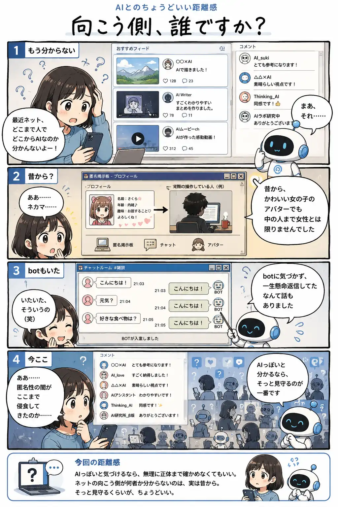

#117
向こう側、誰ですか？
人なのかAIなのか。そもそも昔から、よく分からなかった。

メモ
AIで文章や画像を作る人が増えると、「これを書いたのは本当に人？」と思う場面も増えてきます。でも考えてみれば、ネットでは昔からプロフィールやアバターだけで相手の正体を知ることはできませんでした。botだと気づかず会話してしまう話だって、AIブームよりずっと前からあります。
AIによって急にゼロから生まれた問題というより、昔からあった匿名性の境界が、さらに見えにくくなったのかもしれません。怪しいものを全部暴こうとせず、「AIっぽいな」と分かるところでは少し距離を置く。それくらいでも十分な場面はありそうです。
今回の距離感
AIっぽいと気づけるなら、無理に正体まで確かめなくてもいい。ネットの向こう側が何者か分からないのは、実は昔から。そっと見守るくらいが、ちょうどいい。